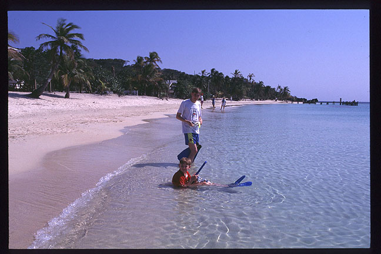
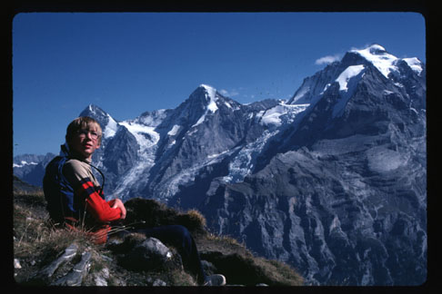
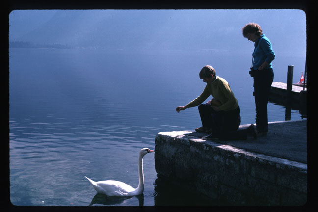
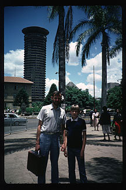
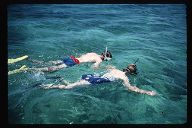
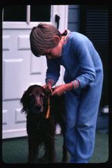
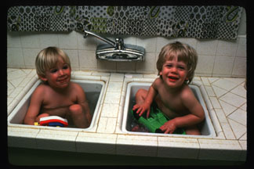
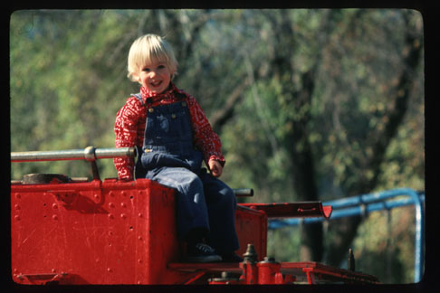
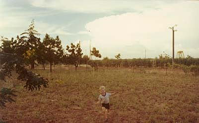

Snapshots from some of my other travels...

Snorkeling with Colby in my trusty
PocoMan T-shirt
during my latest trip to the Bay Islands, April 1998

Taking a rest after climbing the
Schilthorn
, Switzerland, October 1986

Feeding the swans with Aunt Arlene in Hallstatt, Austria, October 1986

Nairobi, Kenya, April 1986

Mombasa, Kenya, April 1986

Our dog Penny patiently tolerates my ceremoniously conferring Dad's Ph.D. tassle on her ear
Loma Linda, CA, June 1982

When's the last time you took a bath this way?
Monterey, CA, May 1976

Who gets to drive the big red fire truck?
Riverside, CA, January 1976

Lovely 120-degree weather in Burkinafaso (then known as Upper Volta), 1975